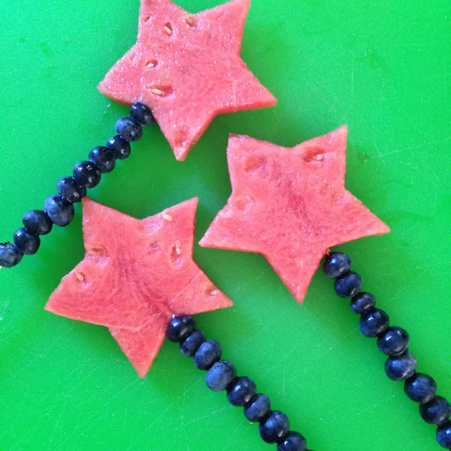

4th of July Fruit Pops

Make All Those Other Countries Jealous
Everyone outside the US doesn't know what they're missing out on. Freedom, guns, sex, drugs, rock n roll, and most importantly, 4th of July fruit pops.
These puppies don't just purrr, they roar. Toss 'em out on the table during a hot holiday afternoon, and you'll be sure to get everyone fired up just in time to fire up those freedom fireworks.
Ingredients:
- 2 watermelons
- 1 (10.5 ounce) package fresh blueberries
- wooden skewers
Steps:
- Slice watermelon into thick slices. Cut out starts using a cookie cutter.
- Skewer about 15 blueberries on a wooden skewer and 1 watermelon star on top. Repeat with remaining ingredients.
Return To Main Page